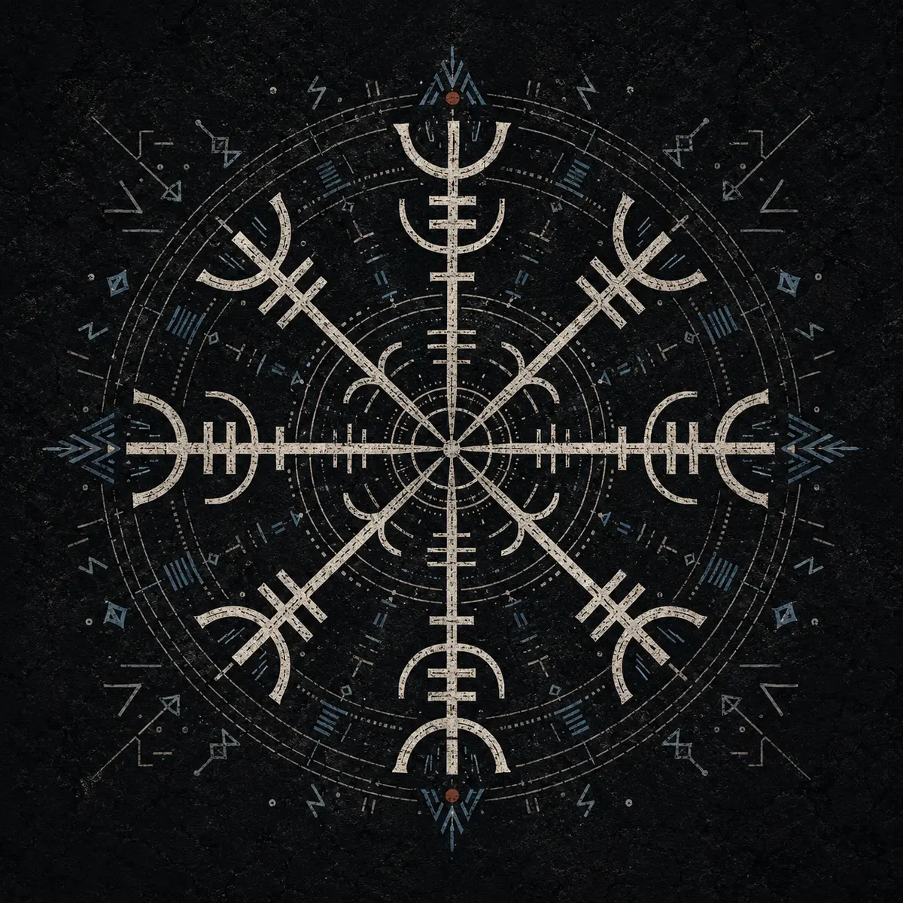

Vikings
People, voyages, trade, settlements and everyday life.
Archive growingThe Old Code / Knowledge archive
A growing field guide to Viking-age culture, runes, Norse symbols, mythology and the living northern imagination.

Context over costume.Five paths into the archive
People, voyages, trade, settlements and everyday life.
Archive growingThe Elder Futhark, inscriptions and modern misunderstandings.
Archive growingHistorical context before modern interpretation.
Archive growingGods, beings, poems and the worlds of Norse tradition.
Archive growingLandscape, craft, customs and the northern inheritance.
Archive growingThe Old Code / Lessons 01–16
Beyond the warrior stereotype: people, work, travel and identity.
5 min read → 02 / ChronologyWhy historical dates differ and why an age never ends overnight.
7 min read → 03 / OriginsBeyond Lindisfarne: ships, trade, ambition and opportunity.
7 min read → 04 / SocietyPower, freedom, labour and inequality in the Viking world.
7 min read → 05 / Daily lifeThe everyday labour that supported ships, towns and rulers.
7 min read → 06 / Ships & seafaringThe famous longship was only one part of a specialised maritime system built for warfare, cargo, fishing and settlement.
8 min read → 07 / Raids & settlementSome Scandinavian expeditions grew from seasonal attacks into mobile wintering communities, political armies and permanent settlements.
8 min read → 08 / Trade & silverTrading towns, cargo ships and silver weighed on scales connected Scandinavia with Europe, Byzantium and the Islamic world.
9 min read → 09 / Religion & ritualBefore the myths were written down, belief lived through local customs, offerings, feasts and relationships with sacred places.
9 min read → 10 / Gods & beliefThe Norse gods belonged to a network of family, conflict and exchange—not a tidy list in which every deity controlled one subject.
9 min read → 11 / CosmologyYggdrasil connects a living mythic cosmos, but the surviving sources do not give us one authoritative map or agreed list of nine worlds.
9 min read → 12 / Death & afterlifeValhalla belonged to selected battle-dead, while Norse traditions imagined several destinations and continuing relationships with graves and ancestors.
9 min read → 13 / RagnarökRagnarök is not only the death of gods and collapse of order. The surviving sources also describe a renewed earth, returning life and a future beyond destruction.
9 min read → 14 / The EddasThe Poetic Edda preserves anonymous poems, while Snorri's Prose Edda explains myth and skaldic language. Both were written down in Christian medieval Iceland.
10 min read → 15 / Icelandic SagasThe sagas preserve names, landscapes and social memory, but their Viking Age stories were shaped into literature centuries after the events.
10 min read → 16 / ArchaeologyObjects, graves and buildings reveal the material Viking Age—but preservation, excavation and interpretation shape the picture we reconstruct.
10 min read →
Lesson 16 / Norse Sources
Objects, graves and buildings reveal the material Viking Age—but preservation, excavation and interpretation shape the picture we reconstruct.
Read the latest lesson → Lesson 15 — Icelandic Sagas: Memory, Literature and the Viking Past →